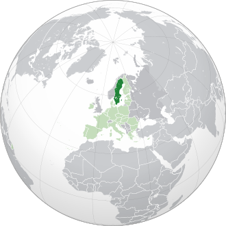

Suécia
A Suécia, oficialmente Reino da Suécia, é um país nórdico, situado no lado oriental da península Escandinava, localizada na Europa do Norte.

História
A Suécia emergiu como um país independente e unificado durante a Idade Média. No século XVII o país expandiu seus territórios para formar o Império Sueco. A maior parte dos territórios conquistados fora da península Escandinava foram perdidos durante os séculos XVIII e XIX.
Desenvolvida com base em valores democráticos e sociais, a Suécia é um dos países mais desenvolvidos do mundo, com uma economia baseada em tecnologia e inovação.
Até recentemente, a Suécia continuou a ser um país não alinhado militarmente, ainda que participando de alguns exercícios militares conjuntos com a OTAN e alguns outros países, além de uma ampla cooperação com outros países europeus na área da tecnologia de defesa e da indústria de defesa. As empresas suecas exportam armas que foram usadas pelos militares dos Estados Unidos no Iraque.[33] A Suécia também tem uma longa história de participação em operações militares internacionais, incluindo, mais recentemente, o Afeganistão, onde tropas suecas estavam sob comando da OTAN, e nas operações de paz patrocinadas pela UE no protetorado da ONU no Kosovo, Bósnia e Herzegovina e Chipre. A Suécia teve a presidência da União Europeia entre 1 de julho a 31 de dezembro de 2009.